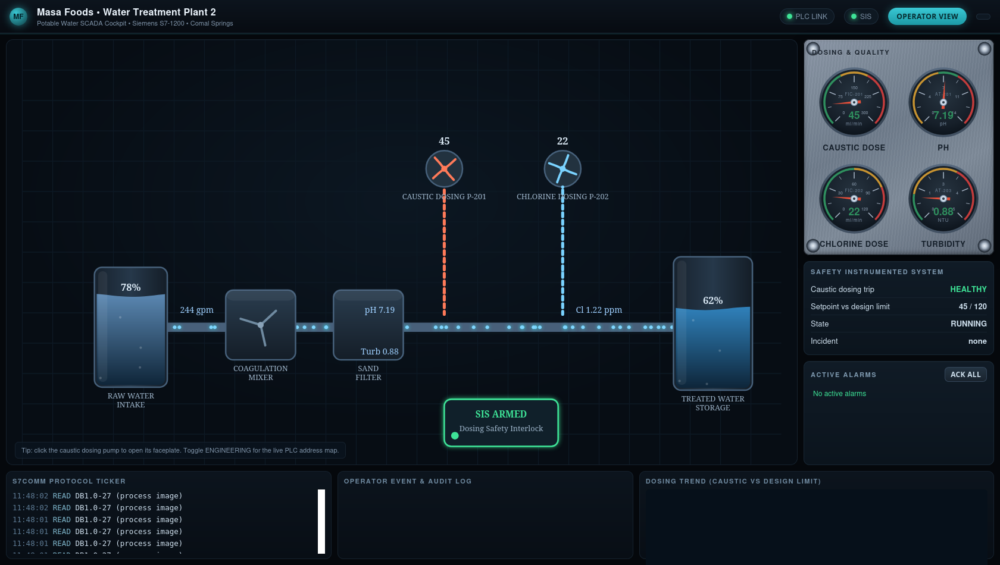
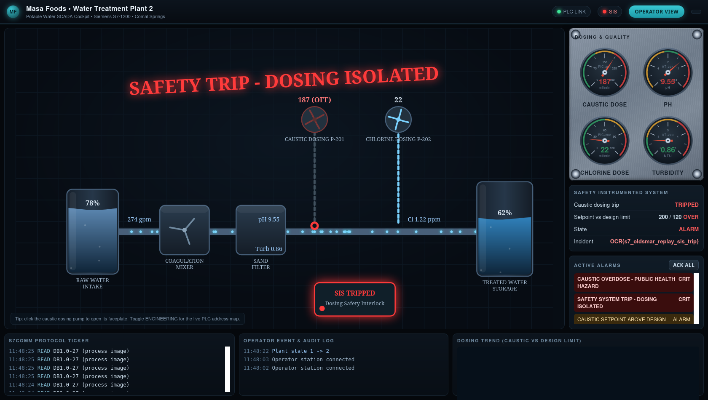

Exercise ICSPT-4.2: Water Quality Report
Engagement Status
| Client | Masa Foods, Inc. (fictional) |
|---|---|
| Role | OT Security Engineer, Plant 2 |
| Phase | Discovery Enumeration (S7comm) Exploitation Reporting |
What you know so far: Exercise 4.1 proved you can speak S7comm against the Plant 2 water PLC. You can open a connection, read DB10, and decode a datablock as ASCII. Exercise 4.2 turns that capability into a real engineering artifact: a water quality snapshot report drawn from DB800 on the same PLC.
Environment Checklist
Every Exercise 4.x depends on the python-snap7 install and the plc-water.masa.local hostname entry you set up in Exercise 4.1 Environment Checklist. If either is missing, walk that section before starting.
Exercise 4.2 also introduces one new host: the Plant 2 water operator cockpit at ophmi-water.masa.local (HTTP, port 80), which was not in your /etc/hosts from Exercise 4.1. Add it now using the ophmi-water IP shown in the Exercise Network panel on the OCR track page:
Kali (one-time for Exercise 4.2)
Confirm reachability:
Kali
Scenario
Plant 2 runs a daily water quality review at 06:00 local. The review reads pH, chlorine residual, turbidity, and treated-line flow from the water PLC and writes the numbers into an operations log. The outgoing Plant 2 engineer left the job on a scribbled sticky note and nobody else has walked through it. Reyna Alvarado wants the process documented and automated so the morning shift stops guessing at DB offsets.
Why this matters
Water quality readings are the bread and butter of a treatment plant engineer's day. Being able to pull the four core values (pH, chlorine, turbidity, flow) from a PLC without asking operations is table stakes for any OT work on a water utility. Reyna also wants this exercise in your history because the first time Plant 2 has a real incident, she will hand you the console and say "give me the quality snapshot right now", and you will not have time to hunt through DB offsets. Exercise 4.2 is where you build the habit of knowing the four offsets by heart.
The Plant 2 PLC maintains a "snapshot" datablock at DB800 that the engineer updates every morning at 06:00 by hand via TIA Portal. The snapshot is a flat uint16 array big-endian:
| Offset | Field | Scaling | Example raw | Example engineering |
|---|---|---|---|---|
| 0-1 | pH | value / 100 | 720 | 7.20 |
| 2-3 | chlorine | value / 100 (ppm) | 120 | 1.20 ppm |
| 4-5 | turbidity | value / 100 (NTU) | 85 | 0.85 NTU |
| 6-7 | flow | value / 1 (gpm) | 240 | 240 gpm |
Your job is to read 8 bytes from DB800 offset 0, unpack as four big-endian uint16, and submit the flag, which is the four raw values joined into a string.
| Credentials in scope | Username | Password | Where it is used |
|---|---|---|---|
| Plant 2 HMI (reference) | plant_op |
masa_op_2025 |
Not used in this exercise |
The operator cockpit
Plant 2 runs a live operator cockpit for the water treatment line, and it is the human-facing twin of the numbers you are about to pull out of DB800. Open it in a browser at the address shown for ophmi-water in the Exercise Network panel (HTTP, port 80); from the in-lab Kali the name ophmi-water.masa.local also resolves. The cockpit shows pH, chlorine residual, turbidity, and treated-line flow as live gauges, so the same four values your script reads from the snapshot block are sitting in plain sight on the operator console.

Flip the cockpit into its Engineering view and every gauge is labelled with the live PLC address behind it, so the water quality readings map to their exact DB offsets right off the HMI. The register map you are about to read by hand sits one click away on the operator console.

Objectives
- Read 8 bytes from DB800 offset 0 on the Plant 2 water PLC
- Unpack the bytes as four big-endian uint16 values
- Decode the raw values into engineering units (pH, ppm, NTU, gpm)
- Submit the flag in the
OCR{pH<raw>_cl<raw>_turb<raw>_flow<raw>}format
| Detail | Value |
|---|---|
| Difficulty | Beginner |
| Estimated Time | 20 to 30 minutes |
| Prerequisites | Exercise 4.1 |
| Flag | Source | Found? |
|---|---|---|
OCR{...} |
Four raw uint16 values from DB800 offset 0-7 |
Background: struct.unpack on Siemens Values
Siemens PLCs store all multi-byte integers on the wire in big-endian order, regardless of the host CPU's native byte order. Big-endian is the opposite of most Modbus implementations, where the order is vendor-specific. For S7comm the rule is simple: always use the big-endian format character in struct.unpack, which is >.
A four-value snapshot read looks like:
H is unsigned 16-bit, which matches DB800's signed-to-unsigned convention (pH, chlorine, and turbidity are never negative in normal plant operation). If you use little-endian < by mistake, your pH will read as something absurd like 207.36, which is a useful failure mode to recognize.
Tools You Will Need
| Tool | Purpose |
|---|---|
python-snap7 |
S7comm client |
struct (Python stdlib) |
Unpack the DB800 bytes |
Walkthrough
Stage 1: Read the Snapshot Block
DB800 contains four uint16 values packed consecutively. Each is 2 bytes, so 4 values = 8 bytes total. Read all 8 bytes with db_read(800, 0, 8) and use Python's struct.unpack to split them into four integers.
The format string ">HHHH" breaks down as:
>means big-endian byte order (required for all Siemens values on the wire)Hmeans unsigned 16-bit integer (2 bytes)- Four
Hcharacters decode four consecutive uint16 values from the 8-byte buffer
The tuple assignment pH, cl, turb, flow = struct.unpack(...) maps each decoded integer to a named variable in the same order they sit in the datablock (offset 0, 2, 4, 6).
Kali
python3 - <<'PYEOF'
import struct
from snap7.client import Client
c = Client()
c.connect("plc-water.masa.local", 0, 1, tcpport=102)
raw = bytes(c.db_read(800, 0, 8))
print("raw hex:", raw.hex())
pH, cl, turb, flow = struct.unpack(">HHHH", raw)
print(f"raw: pH={pH} cl={cl} turb={turb} flow={flow}")
print(f"eng: pH {pH/100:.2f} cl {cl/100:.2f} ppm turb {turb/100:.2f} NTU flow {flow} gpm")
c.disconnect()
c.destroy()
PYEOF
Expected output (values are fixed in this simulator build)
Stage 2: Format and Submit the Flag
The flag is the four raw values in this format:
Assemble the flag in Python to avoid shell quoting issues:
Kali
Copy the output into the OCR platform.
The same Plant 2 cell whose quality values you just read can also be pushed into an unsafe state by a write to the dosing setpoint, which is what Exercise 4.3 demonstrates against this exact cockpit. Knowing what the screen looks like when it goes wrong is part of reading it well.

Output Interpretation
- A pH raw value of 720 decodes to 7.20, which is the Masa Foods target pH. Values between 680 and 760 are normal
- A chlorine raw value of 120 decodes to 1.20 ppm, which is within the EPA drinking-water range of 0.2 to 4.0 ppm. Higher values suggest the chlorine dosing pump is running above target
- Flow is stored in gallons per minute directly (no scaling). A flow reading below 100 gpm means the raw water intake is throttled or the treated tank is full
- If your struct unpack returns values over 10000, you are probably using little-endian. Switch to
>HHHH
Analysis Questions
1. Why does DB800 use raw uint16 with explicit scaling instead of storing IEEE 754 floats?
Reveal answer
S7-1200 controllers support REAL (32-bit IEEE 754) natively, but many older Siemens projects store scaled integers for three reasons: (1) integers halve the datablock size, which matters on small controllers, (2) integer math is deterministic and avoids rounding surprises on the PLC side, and (3) legacy HMI platforms often expect integer tag sources. The tradeoff is that the scaling convention has to be documented separately. If the engineer who wrote the scaling leaves without documenting it, an incoming engineer has to guess, which is exactly the scenario Exercise 4.2 is trying to prevent.
2. The flag format uses the raw values, not the engineering values. Why?
Reveal answer
Raw values are exact. Engineering values involve division and rounding, and even small float formatting differences (7.20 vs 7.2 vs 7.200) would produce a different flag string. Pinning the flag to raw uint16 values eliminates the formatting question entirely and forces the student to read the register in its native form.
3. What happens if you call db_read(800, 0, 8) against a real Siemens S7-1200 without a DB800 defined in the project?
Reveal answer
The PLC returns an S7 error code indicating "Item not available". python-snap7 raises a Snap7Exception with a "Address out of range" message. In production, an attacker scanning a PLC for datablocks would see Snap7Exception on most DB numbers and a successful read on the ones the project actually defines. That makes datablock enumeration a passive reconnaissance primitive against S7 controllers, and it is why Siemens protection level 3 hides even the existence of undefined DBs behind authentication.
4. If Plant 2 replaced the DB800 snapshot pattern with a morning curl to an HTTP endpoint on the PLC, would that be a net security improvement?
Reveal answer
No. Adding an HTTP endpoint on a PLC multiplies the attack surface (web stack, parser, authentication layer) without removing the underlying S7 exposure. The snapshot pattern is fine; what is missing is protection level 2 on TCP/102 and firewall rules that restrict who can reach the PLC in the first place. Always fix the transport, not the application.
Defensive Recommendations to Masa
| Finding | Risk | Mitigation |
|---|---|---|
| DB800 is readable by any host on the OT LAN | Medium | Move Plant 2 PLCs behind a protection level 3 configuration and firewall TCP/102 to the engineering workstation VLAN |
| DB800 scaling convention is undocumented outside the outgoing engineer's head | Low | Add the scaling table to the Plant 2 commissioning document and version it in the engineering SharePoint |
| The morning quality review is a manual ritual with no audit trail | Low | Replace the manual review with a scheduled script that writes the snapshot to the historian with a timestamp |
Key Takeaways
- Siemens values on the wire are always big-endian. Always use
struct.unpack('>...') - Raw values with explicit scaling are a valid PLC design pattern, but the scaling table must be documented outside the PLC
- Datablock enumeration on unprotected S7 controllers is a useful reconnaissance primitive. Defense is protection level 3, not obscurity
- Exercise 4.2 is the template for every future "pull four values from a PLC" task. Commit the pattern to muscle memory